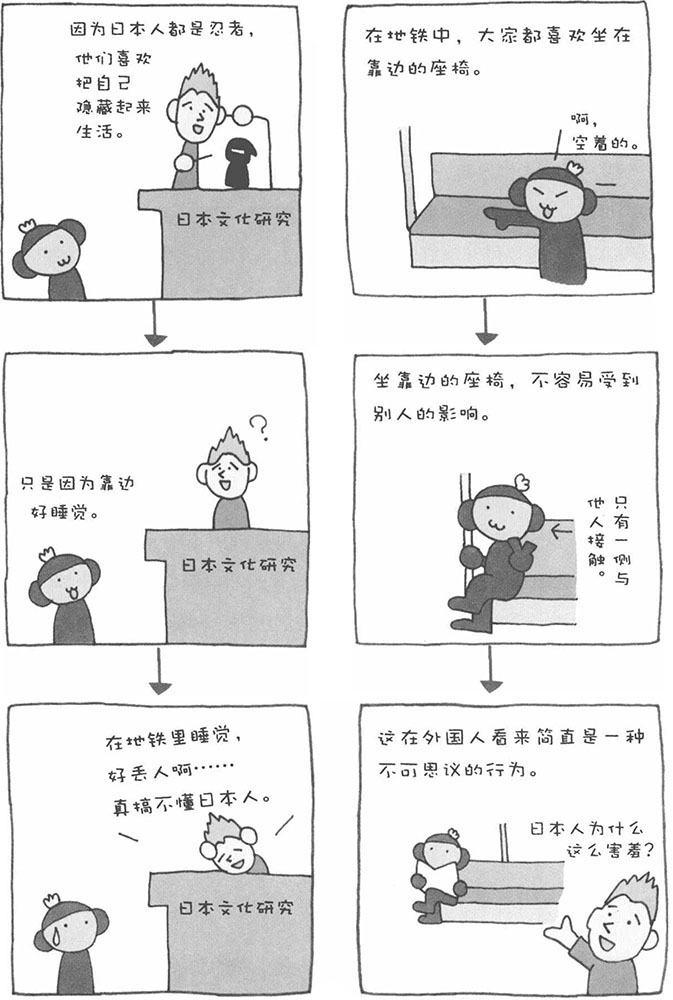

和在电梯中一样，在拥挤的地铁中，人也会采取类似的行为模式，这就是坐座椅的位置。当很多人涌入一节空车厢之后，长座椅的两端先被人坐满，而座椅的中央后被人坐满。在地铁里，我们经常能看到这样的情景：如果靠边的座椅空着，就会有人从很远的地方跑过来坐下（尤其是中年大婶）。
这种行为也是由人的私人空间意识引起的。靠边的座椅，只有一侧与别人接触，因而大多数人都喜欢坐在这里。万一不小心睡着了，还可以减少倒在别人身上的几率，用手机发短信时也不用担心别人偷看了。总之，周围的人越少，我们就越自在。
不过，也不是所有靠边的地方都会让人感到舒服自在，比如公共厕所中靠近入口一端的小便池或马桶就经常受到"冷遇"。快餐店、咖啡馆等高靠背座椅靠近外侧的一端也不太受欢迎。这是因为高靠背座椅本身就可以确保一定的私人空间，而靠外侧的一端反而容易将人暴露。此外，对于长座椅来说，如果两边都没人，有时我们也会选择坐在中间的位置。人的行为真是有趣而多变。
顺便介绍一下，人的私人空间会根据对象的不同而发生改变。假设一个人前方的私人空间为1米，如果对方是亲近的人，私人空间也许会缩小到0.5米，但如果是不喜欢的人，也许会扩大到2.5米。而对于憎恶的人，则会敬而远之。
